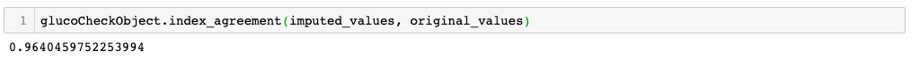
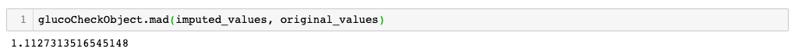
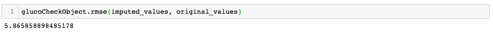

7. Error Metrics
7(a) Get All Metrics
This function is a wrapper for all the error metrics.
Method Signature: def getMetrics(self,lstm_pred, test_val)
Function Parameters:
| Name | Description | Datatype |
|---|---|---|
| lstm_pred | a list of the predicted values | NumPy array |
| test_val | a list of the original values | NumPy array |
Return:Outputs the error metrics
7(b) Index of Agreement
This function calculates the Index of Agreement of the imputed values with respect to the original values.
Method Signature: def index_agreement(self, s,o)
Function Parameters:
| Name | Description | Datatype |
|---|---|---|
| s | a list of the predicted values | NumPy array |
| o | a list of the original values | NumPy array |
Return:A numerical value of the index of agreement
Example: Index of Agreement

7(c) Mean Absolute Deviation
This function calculates the Mean Absolute Deviation of the imputed values with respect to the original values.
Method Signature: def mad(self, s,o)
Function Parameters:
| Name | Description | Datatype |
|---|---|---|
| lstm_pred | a list of the predicted values | NumPy array |
| test_val | a list of the original values | NumPy array |
Return:A numerical value of the mean absolute difference
Example: Mean Absolute Deviation

7(d) Mean Absolute Percentage Error
This function calculates the Mean Absolute Percentage Error of the imputed values with respect to the original values.
Method Signature: def mape(self, s, o)
Function Parameters:
| Name | Description | Datatype |
|---|---|---|
| s | a list of the predicted values | NumPy array |
| o | a list of the original values | NumPy array |
Return:A numerical value of the Mean Absolute Percentage error
Example: Mean Absolute Percentage Error
7(e) Root Mean Square Error
This function calculates the Root Mean Squared Error of the imputed values with respect to the original values.
Method Signature: def rmse(self, s,o)
Function Parameters:
| Name | Description | Datatype |
|---|---|---|
| s | a list of the predicted values | NumPy array |
| o | a list of the original values | NumPy array |
Return:A numerical value of the root mean squared error
Example: Root Mean Square Error
